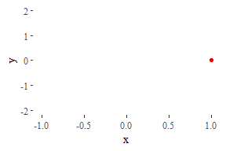
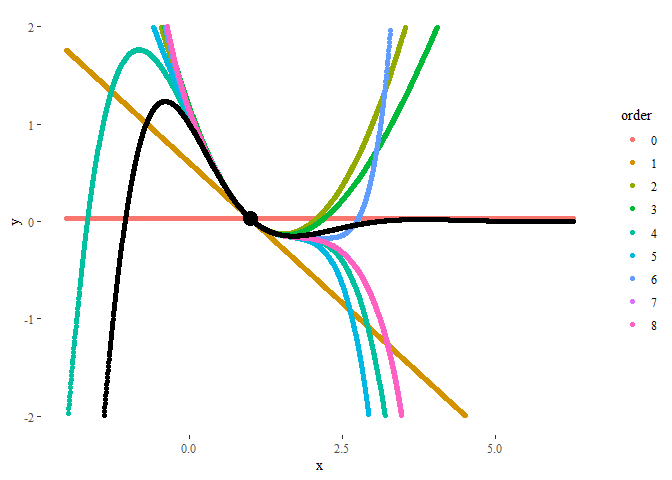
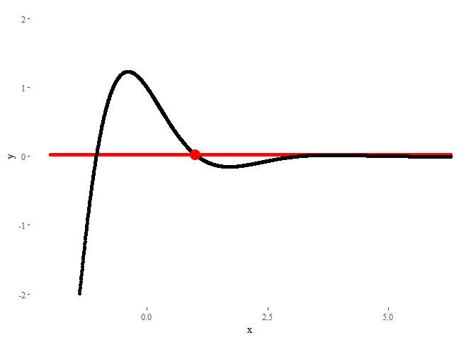

Animations in R
Posted on Sun 02 December 2018 in Blog
I've recently discovered the package gganimate thanks to this brilliant example. I've been playing with the package during this weekend, and I created some examples that I spread through Twitter.
Some Twitter users showed interest in knowing more. I hope this short tutorial can satisfy them.
Libraries used
We're going to need the following libraries:
# Numerical
library(pracma) # To calculate the Taylor polynomials
library(reshape) # For using melt
# Display
library(ggplot2) # For plotting
library(ggthemes) # Also for plotting
library(gganimate) # For animating. Install using devtools::install_github('thomasp85/gganimate')
library(kableExtra) # To display nice tables
Animating a moving particle
Here we'll generate a moving particle. First, we need the positions in time. In our case, the dynamical equations will be given by:
$$ \begin{cases} x(t) = cos(t) \\ y(t) = sin(2t) \end{cases}$$
So we generate the series and store them in a dataframe:
ts <- seq(0, 2*pi, length.out = 100)
xs <- cos(ts)
ys <- sin(2*ts)
particle <- data.frame(ts = ts, xs = xs, ys = ys)
The code for generating the animation follows a very similar syntax to ggplot. In this case, we indicate that the values of ts should be used as the transition time.
ggplot(data = particle) +
geom_point(aes(x = xs, y = ys), col = 'red') + # Generate the plot
theme_tufte() + # Make ...
labs(x = 'x', y = 'y') + # ... it ...
scale_y_continuous(limits = c(-2, 2)) + # ... look ...
guides(col = FALSE) + # ... pretty.
transition_time(ts) + # And animate!
ease_aes('linear')

Animating a Taylor series
Let's see now a more complex example. Our purpose is to explore Taylor polynomials of different degrees approximating the function
$$f(x) = cos(\frac{3x}{2}) e^{-x} $$
around a given point.
Thus, we begin creating the function:
f <- function(x) {
cos(1.5*x)*exp(-x)
}
In this case, we want to compare how good is the performance of Taylor polynomials of different orders. The data we have to generate is a bit more complex than before.
xs <- seq(-2, 2*pi, length.out = 1500) # Values of x
x0 <- 1 # Value of x where the Taylor series will be centered
ys <- matrix(0, nrow = length(xs), ncol = 9)
for(i in 1:9) { # Extract Taylor polynomials of orders 0 to 8
order <- i - 1 # Indexes have to be positive, but first order is 0
if(order == 0) { # A Taylor polynomial of order zero is just...
ys[,i] <- f(x0) # ... a constant function
} else {
taylor_coefs <- taylor(f = f, x0 = x0, n = order) # Get polynomial
ys[,i] <- polyval(taylor_coefs, xs) # Evaluate polynomial
}
}
# Rewrite as dataframe
df <- data.frame(ys)
colnames(df) <- seq(0,8)
df <- melt(df)
df <- cbind(df, xs = rep(xs,9), f = f(xs))
colnames(df) <- c('order', 'ys', 'xs', 'f')
The resulting dataframe is a collection of polynomials of different orders evaluated at each point in xs. Additionally, we added the values of the original function f(x), also at each point:
| order | ys | xs | f |
|---|---|---|---|
| 0 | 0.0260228 | -2.000000 | -7.315110 |
| 0 | 0.0260228 | -1.994474 | -7.265955 |
| 0 | 0.0260228 | -1.988948 | -7.216622 |
| 0 | 0.0260228 | -1.983423 | -7.167120 |
| 0 | 0.0260228 | -1.977897 | -7.117454 |
| 0 | 0.0260228 | -1.972371 | -7.067632 |
A static plot will look like:
ggplot(data = df) +
geom_point(aes(x = xs, y = ys, col = order)) + # Generate basic plot
geom_point(aes(x = xs, y = f)) + # Plot also original function
geom_point(aes(x = x0, y = f(x0)), col = 'black', size = 5) + # Remark initial point
theme_tufte() + # Make it ...
labs(x = 'x', y = 'y') + # ... look ...
scale_y_continuous(limits = c(-2, 2)) # ... pretty.

In order to animate it, now we will use the command transition_states, using order (the order of the Taylor polynomial) as the animation parameter. The parameters transition_length and state_length control how much time each state stays in screen, and how long the transition between states should look.
ggplot(data = df) +
geom_point(aes(x = xs, y = ys), col = 'red') + # Add basic plot
geom_point(aes(x = xs, y = f)) + # Plot also original function
geom_point(aes(x = x0, y = f(x0)), col = 'red', size = 5) + # Remark initial point
theme_tufte() + # Make ...
labs(x = 'x', y = 'y') + # ... it ...
scale_y_continuous(limits = c(-2, 2)) + # ... look ...
guides(col = FALSE) + # ... pretty.
transition_states(order, transition_length = 1, state_length = 0.5) + # And animate!
ease_aes('linear')

The result could not look nicer!
PS: If you liked this post, this visualization I made in GeoGebra some time ago may also be of your interest.